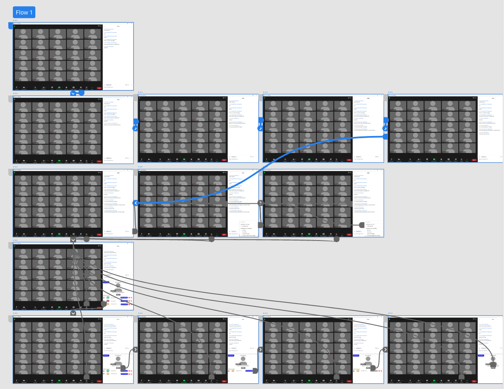
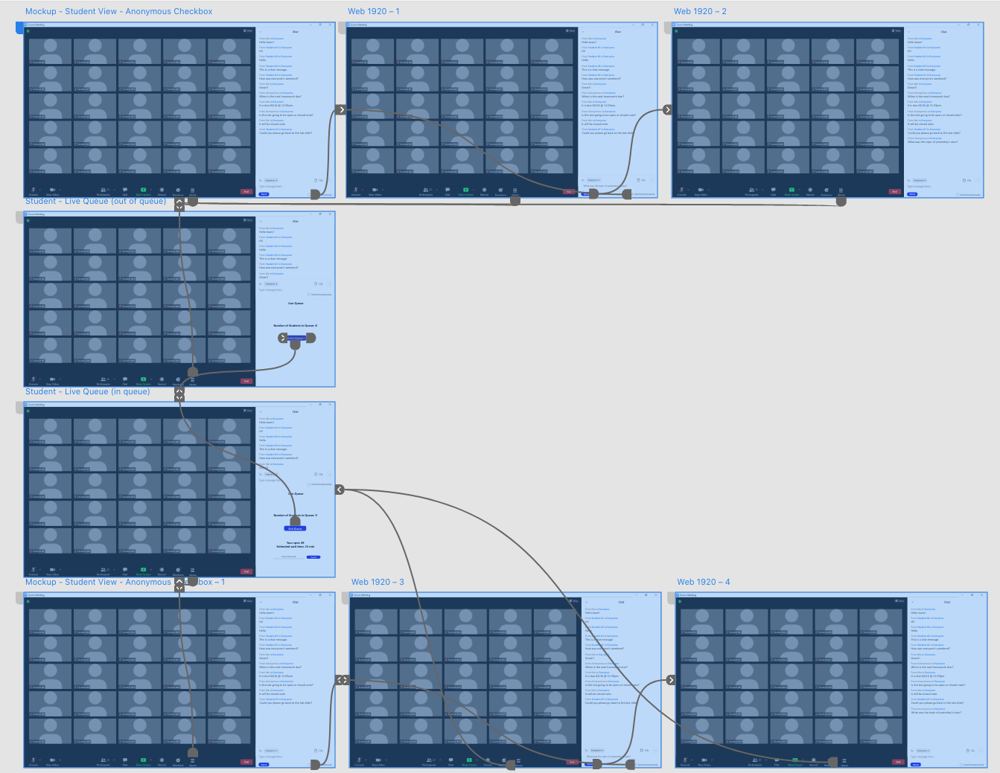

Milestone 4¶
Final Prototype Proposal for the Lightning Sharks Team Proposal. By Josh Weintraub, Eric Miller, Alec Oortman, Alexander Costa, and Daniel Grotch
Prototypes¶
1. Instructor¶
{kind=link}
- User Story 1.1
As a professor, I want to be able answer a series of anonymous questions from my students, so that I may interact with them without putting them in the spotlight. We addressed this by including this series of questions in the usual chat, in order to provide the instructor with a simple, known way of finding and answering these questions. The auto animations simulate interaction between the student and instructor.
- User Story 2.1
As a professor, I want to see a queue of questions so that I can make it easier for students virtual and physical to solicit input on class subjects without talking over each other or asking repetitive questions that may arise from inability to properly converse between in-person and virtual-students. We addressed this with a new button at the bottom of the screen called “queue” that allows the instructor to open up a queue. When students are in the queue, the instructor can see who is in the queue, go through the queue, and easily see the student at the front. Their video shows in the same way it would in the main panel so the instructor can see whom they’re interacting with.
- User Story 2.2
As a Professor, I want each student to be muted until it is their designated time to ask a question, so that they are not all talking over each other trying to get my attention. Within the queue, the professor has the option to request students to unmute. One limitation of our prototype was that we cannot simulate student-professor interaction, so there is no way to simulate what would happen once the student does unmute (in which case the professor would be given the option to mute them again).
- User Story 3.1
As a professor, I want to have a dedicated panel (a sort of “landing page” component) for these new options so I can easily enable/disable them and adjust their settings from one place. We actually went off of the original user story, and integrated the settings into the features themselves, as not to make the new settings seem out of place. In the chat, within the already-existing options menu, the instructor can enable/disable automatic questions. This makes it simple for the instructor to find the setting (as it’s where the instructor would expect it if they were already familiar with previous Zoom versions). Similarly, we included the mute options within the queue, rather than in a separate panel. This allows the instructor to easily control the settings immediately when needed, without opening up separate menus.
Demo (shows all three user stories):¶
2. Student¶
{kind=link}
- User Story 1.2
As a student, I want to be able to ask a question during class but not reveal my identity so that I can participate while avoiding judgement from other students. By including a check box for anonymous questions, we allow the student to submit a question anonymously, in case they do not want to be put in the spotlight. All anonymous questions will be placed in the usual chat menu, so it gets the same attention as other questions.
- User Story 2.3
As a student, I want to be able to add my question to a queue, so that I may get the opportunity to have my question answered instead of it being overlooked in a series of submitted inquiries. By including an option for students to enter a queue, students are able to wait for their turn to ask a question, then be given allotted time to talk with the instructor (as well as the rest of the class). The students have full control over whether they want to enter the queue. Additionally, they may set a topic, but due to limitations of Adobe XD, we were unable to show what the text box looks like when typing.
Demo (shows both user stories):¶
Research Question and Methodology¶
Research Question: Will the inclusion of our live queue and anonymous questions option in Zoom encourage participation from both online and remote students in a way that also prevents too many intervening at the same time that impedes effective discussion?
Methodology: Our methodology will be a mix of Observations and Experiments, as we would like to observe student interaction in both the old version of Zoom and our version, as well as experiment on their behavior as it relates to different design features that we include/disclude.
Testing Procedure¶
1. Observations¶
We begin by viewing a series of hybrid-synchronous learning classes. We are looking for information about how often students interact with the professor and each-other. This will also be our Control Group for the sake of experimentation. This includes data such as:
How many students are remote vs. in person
How frequently are questions asked
Which students are asking the questions (remote vs. In-Person)
How long do they have their hand raised or wait on average for their question to be answered
How does the timing compare between questions asked in chat or by signaling the “hand raised” emoji in Zoom and which is faster?
How does this vary by professor, class size, or type of question?
Are these questions being asked primarily over voice or by chat?
2. Experimentation¶
- Ideally we would like to conduct two blind tests. One where we have participants act as the professor and one as the student.
Student - We would like them to ask a question to a fake zoom class while using one of the interfaces (real Zoom vs. our prototype) we create and decide for themselves which one fits the appropriate subject matter and context. These contexts could vary based on the location of the student (remote vs. in-person), the timeliness of the question, the subject matter, etc. This will better help us understand both the habits of the students, the easiness of the system’s use, and which area still needs work.
Professor - We would like to have either students roleplay as a professor or ask actual ones to test the system. We can do this by presenting the professor with a variety of questions asked in various ways offered by the new system. For example we would like to see their approach tackling the question-queue, if they prioritize live questions or text-based, and how long they take to do so. Understanding the timing and the ways professors interact with eager students is paramount to an understanding of how to best increase participation from those same students.
3. Data & Data Analysis¶
The first set of data will be the distribution of answers to the above seven questions for the observation. This will be analyzed in a heuristic manner. By collecting this information we can begin to create models of what our average hybrid-synchronous class looks like at UGA and the habits of students.
For example, if we find that students preferred to ask questions over voice instead of text, our priority would shift to improving the question-answering queue system. However, if we found that they preferred to have inquiries submitted by text, then our focus would move slightly to the anonymous question queue to better meet the trends of the students involved.
The next set of data will be from the experiments. Some of this data will be numerical, such as the amount of time it takes students to enter the queue, and whether it is any faster for them (for example) to raise their hand on Zoom. By looking at timing, we can analyze whether we need to improve the design to include easier ways for the user to find the features. Much of the analysis will also include heuristic analysis and evaluation of which version of the prototypes the student and instructor prefers, as well as any feedback they provide on the design and features. Additional iterations of experiments may need to be included in order to assess any further changes we make.
4. Informed Consent¶
To acquire informed consent we would verify with the professor that they were ok with us recording and viewing their class, sometimes in person and sometimes-remote. We would also collect consent waivers for all participants in the experiment.
5. Pandemic Safety¶
Since a lot of this will be conducted on Zoom, we will do mostly monitoring of Zoom classes. However, with the permission of the professor and space permitting, we would like to visit a few classes in-person to create a more well-rounded model of student behavior.
If visiting in person we will comply with all relevant safety procedures in conjunction with University Guidelines